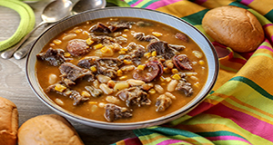

Locro
Contexto Histórico
Na Argentina, seu consumo é generalizado. Embora o locro argentino tenha origens indo-americanas, sua preparação também sintetiza as contribuições gastronômicas europeias durante pelo menos três séculos, pela presença de carne de porco, chorizo, mondongo e aliños na receita.

Ingredientes:
1 kg de costela bovina ou osso de pescoço(puchero), ou uma carne tipo acém
1/2 pacotinho de canjica amarela (deixe de molho um dia antes)
1 cebola branca picadinha
1 pimentão verde picadinho
1 fio de óleo de milho (soja, canola, ou azeite)
2 tabletes de caldo de carne
2 tomates médios picadinhos
Alho a gosto e sazón verde
Cheiro verde
MODO DE PREPARO:
Doure o alho e refogue a carne, seja a costela ou o acém ou mesmo o osso de pescoço geralmente mais usado no Paraguai.
Junte a canjica e cubra com pelo menos 4 dedos acima de água.Acrescente o caldo de carne e deixe cozinhar por pelo menos 30 minutos, sempre cuidando para não secar e grudar no fundo da panela.
Da mesma forma como cozinha canjica normalmente.
Abra a panela e observe se ainda está dura a canjica, se precisar acrescente mais água e torne a cozinhar sempre com bastante caldo.
Quando observar que a canjica está cozida, baixe o fogo e numa panela separado, refogue a cebola no óleo, acrescente o pimentão e os tomates, o sazón e faça um breve molho, deixe apurar um pouco e junte a panela com a canjica.
Deixe tomar gosto e engrossar um pouco o caldo no fogo baixo para não grudar, pois pode queimar facilmente.
Quando tomar gosto acrescente o cheiro verde e sirva quente